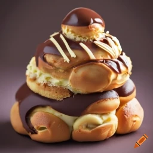

La "Révélation Chocolatée" - Une Religieuse au Chocolat qui Convertit les Palais Impies
Description:
Vous avez toujours cru que le divin résidait dans les cieux ? Détrompez-vous, il réside désormais dans notre Religieuse au Chocolat. Préparez-vous à une expérience transcendante où le cacao devient votre guide vers le paradis des saveurs. Cette pâtisserie divine est la réponse à toutes vos prières sucrées,
et nous vous assurons qu'aucun pêché ne sera pardonné si vous la laissez échapper
Ingrédients:
Pour la pâte à choux:
- 125 ml d'eau
- 60 g de beurre
- 1 pincée de sel
- 75 g de farine
- 2 œufs
Pour la Crème Pâtissière au Chocolat:
- 500 ml de lait
- 4 jaunes d'œufs
- 100 g de sucre
- 40 g de maïzena
- 150 g de chocolat noir, haché
Pour le Glaçage au Chocolat:
- 200 g de chocolat noir
- 100 g de sucre glace
- 100 ml d'eau
- Quelques noisettes concassées (pour la décoration)
Recette:
Pâte à Choux:
- Dans une casserole, portez à ébullition l'eau, le beurre et le sel.
Ajoutez la farine d'un coup et remuez vigoureusement jusqu'à ce que la pâte forme une boule.
Retirez du feu et laissez refroidir légèrement.
Incorporez les œufs un à un, en mélangeant bien entre chaque ajout, jusqu'à obtention d'une pâte lisse.
Mettez la pâte dans une poche à douille et formez des petits choux sur une plaque de cuisson.
Faites cuire au four préchauffé à 180°C pendant 20 à 25 minutes, jusqu'à ce qu'ils soient dorés.
Crème Pâtissière au Chocolat:
- Dans une casserole, chauffez le lait jusqu'à ce qu'il frémisse.
Dans un bol, fouettez les jaunes d'œufs, le sucre et la maïzena.
Versez le lait chaud sur le mélange d'œufs en remuant constamment.
Remettez le tout dans la casserole et faites cuire à feu moyen jusqu'à épaississement.
Retirez du feu, ajoutez le chocolat haché et mélangez jusqu'à ce qu'il soit fondu.
Laissez refroidir
Assemblage:
- Coupez les choux en deux.
À l'aide d'une poche à douille, garnissez la partie inférieure des choux avec la crème pâtissière au chocolat.
Replacez la partie supérieure des choux.
Répétez jusqu'à former une tour de choux.
Glaçage au Chocolat:
- Faites fondre le chocolat au bain-marie.
Ajoutez le sucre glace et l'eau, mélangez jusqu'à obtenir un glaçage lisse.
Nappez délicatement chaque chou de ce mélange divin.
Décorez avec des noisettes concassées.
Présentation:
- Disposez votre chef-d'œuvre sur un autel de présentation, prêt à être adoré.
// ol>li*6 section>(nav>img+ul>li*5)
